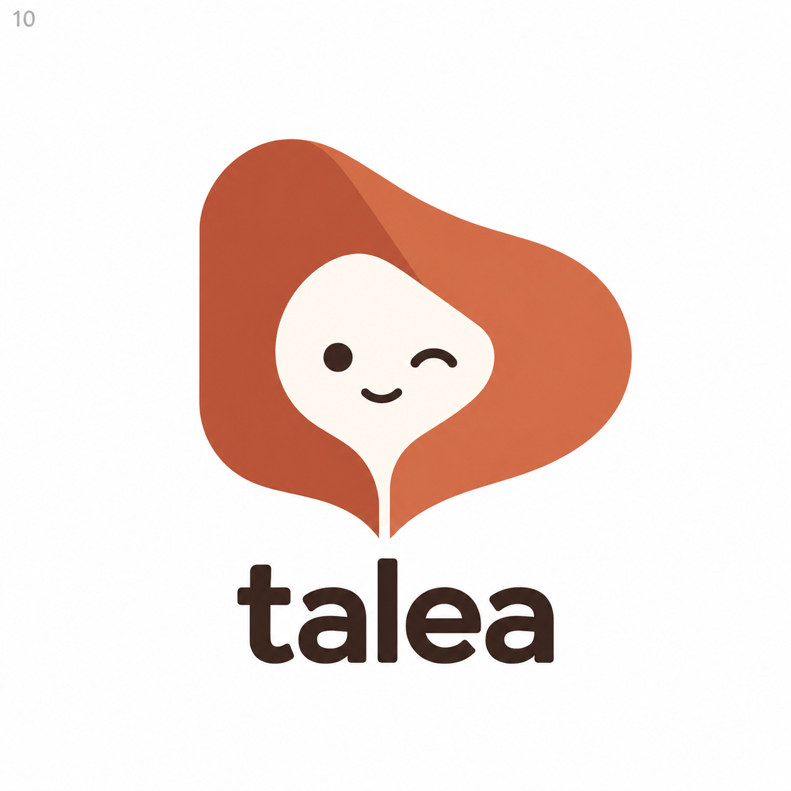

Dein bisheriger Favorit
Die runde Kapuzenform als Ausgangspunkt.
Dein Favorit und zwei Verfeinerungen der äußeren Buchform. Klicke auf ein Bild für die volle Größe.

Die runde Kapuzenform als Ausgangspunkt.
Geradere Außenkanten und eine umgeschlagene Seite unten rechts.
PNG herunterladenZwei obere Seitenbögen mit einer Vertiefung in der Mitte.
PNG herunterladen